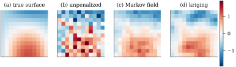

44.4 Spatial effects
Many regression data sets carry a location: the district a flat is in, the county a case was reported from, the coordinates of a soil sample. Location is rarely of interest in itself; it stands in for everything unmeasured that varies smoothly over space — climate, soil, infrastructure, local labour markets — and leaving it out puts all of that into the error and biases the coefficient of any spatially patterned covariate. Putting it in needs a design block and a penalty, like any smooth covariate. The only question is what “smooth over space” should mean, and there are two answers, one per kind of location data.
44.4.1. The geoadditive model
Let
Two cases are distinguished by the kind of location.
(a) (Areal data.)
(b) (Point-referenced data.)
In (a) the map is a graph and smoothness means that
neighbouring regions do not differ by much; in (b) the
map is a plane and smoothness means what it means for a
surface. Both are pairs
44.4.2. Markov random fields on a map
For areal data, write
where the sum runs over unordered neighbour pairs:
the first-difference penalty of Definition 43.3.1 with
“next knot” replaced by “neighbouring region”, the two
coinciding exactly on a chain
Let four districts lie in a row,
Let the regions
(a)
(b)
(c) Treating
Proof.
(a) Symmetry is immediate. Each unordered neighbour pair is counted twice in the double sum over ordered pairs, so
(b) By (a),
(c) If
Part (c) is the reason for the name. The penalty does
not shrink a region towards zero — that would be the
ridge penalty
Remark (Variants). Three variants
fit the same framework. Weighting each pair by
44.4.3. Kriging bases for coordinates
For points rather than regions, smoothness comes from
the theory of stationary random fields, which is to say
from Part
VII. Let the spatial effect be a realization of a
mean-zero process
Let
(a) The best linear predictor of
(b) Consequently the log-density of
(c) Taking every distinct location as a knot recovers exact kriging, that is, generalized least squares with the covariance
Proof.
- (a) By Theorem 14.2.8
(or Theorem 32.3.1
with
- (b)
- (c) With
Idea. A spatial term is a random effect with a structured covariance — not an analogy: by Proposition 44.4.2 the penalty is the inverse prior covariance, and Section 44.5 makes that general. The Markov random field Eq. 44.4.2 says the same with a sparse precision matrix in place of a dense covariance, which is why it is cheap on large maps.
If
44.4.4. A map
A simulated country is a
Figure
44.4.1 compares three fits. Unpenalized district
effects use

The map and its penalty are built from the neighbourhood list alone:
import numpy as np
def lattice(side):
"""Rook adjacency on a side x side grid of districts, and the district centroids."""
coords = np.array([[c + 0.5, r + 0.5] for r in range(side) for c in range(side)])
neighbours = []
for s in range(side * side):
r, c = divmod(s, side)
nb = [(r + dr) * side + (c + dc) for dr, dc in ((-1, 0), (1, 0), (0, -1), (0, 1))
if 0 <= r + dr < side and 0 <= c + dc < side]
neighbours.append(sorted(nb))
return coords, neighbours
def neighbourhood_penalty(neighbours):
"""K = D - W: the number of neighbours on the diagonal, -1 for each neighbour pair."""
d = len(neighbours)
K = np.zeros((d, d))
for s, nbrs in enumerate(neighbours):
K[s, s] = len(nbrs)
for t in nbrs:
K[s, t] = -1.0
return KWarning (Spatial confounding). A
spatial term competes with every covariate that is
itself spatially patterned: they are concurve in the
sense of Definition 44.2.1.
In Example (Smoothing a district map)
the covariate
44.4.5. Exercises
A. Check your understanding
A map has two islands, each a connected group of
districts, with no neighbour pairs between them. What is
B. Practice
Show that on a chain
Using Proposition 44.4.1(c),
show that if district
Solution. Up to constants the terms
of Eq. 44.1.4
involving
C. Going deeper
Let